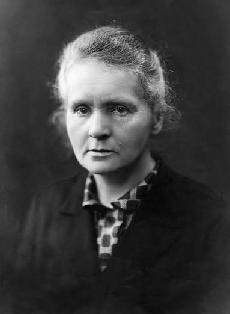
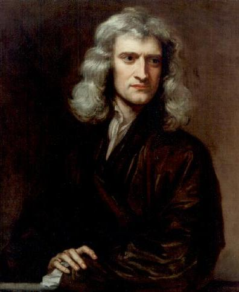

Albert Einstein

Famous for the theory of relativity: E = mc2
Learn more: Wikipedia
Marie Curie

Discovered radium and polonium, pioneered research in radioactivity.
Learn more: Wikipedia
Isaac Newton

Known for the laws of motion and gravity.
Formula: F = ma (Force = mass * acceleration)
Learn more: Wikipedia
Rosalind Franklin

Contributed to the discovery of DNA structure.
DNA model: A, T, G, C base pairs held by hydrogen bonds in a double helix.
H2O structure was part of her X-ray crystallographic studies.
Learn more: Wikipedia